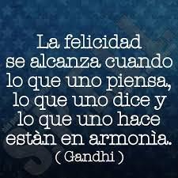
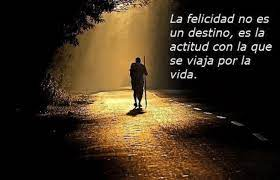

COMO VIVIR BIEN, VIVIR MEJOR, Y LOGRAR OBTENER LA FELICIDAD
Existen múltiples teorías sobre el buen vivir, distintos movimientos o corrientes que intentan explicar ¿qué es vivir bien? El hedonismo intenta explicarlo y aboga por una definición de buena vida como aquella en la que hay felicidad y ausencia de sufrimiento. Esta corriente fue defendida por Epicuro en la Grecia clásica, pero también en el siglo XVIII por Jeremy Bentham. Sin embargo hay que aclarar que el hedonismo defiende la felicidad a largo plazo, no como un simple encadenamiento de sensaciones placenteras momentáneas.
Todos estamos de acuerdo en que vivir bien es una sensación de bienestar y plenitud con ausencia del sufrimiento o de preocupaciones que puedan amargar nuestros sentimientos. Sin embargo, no podemos tomar una simple percepción o concepto del buen vivir debido a que es algo muy relativo, puede acarrear distintas corrientes debido a la visión del que intenta responder ante esta incógnita. De acuerdo con esto, la buena vida para cada uno consistiría en vivir de acuerdo con sus valores individuales. Esto no significa que no merezca la pena invertir el tiempo en esclarecer cuáles son estos valores.
“La alegría es a pesar de lo que hay, no merced a lo que hay" (Fernando Savater, 2013) Con estas palabras explicaba el filósofo Fernando Savater cuál es su visión de la alegría, algo que debe ser llevado con lo que tenemos, no con lo que esperamos tener en algún momento. Muchas personas en el mundo piensan que la felicidad se encuentra en el auto deportivo de último modelo o en las propiedades excesivamente costosas y llenas de lujos, ¿eso realmente es felicidad? ¿El dinero realmente puede llenar el vacío emocional de las personas y hacer que vivan más felices? Este pensamiento buscando las riquezas es muy simple y burdo, debido a que vivir feliz no depende de cuantas propiedades tengamos, depende de cómo podemos vivir la vida de la mejor manera y como sobrellevamos las miserias y las injusticias que el día a día puede otorgarnos, en azar del destino o de cualquier otro factor del que podemos creer. Epicuro sostiene evitar el dolor y buscar el placer, este llamaba a no temerle a la mente, buscar la imperturbabilidad de la mente y del alma. Alcanzar el mayor placer por cada una de las cosas cotidianas que realizamos, el placer por caminar, por simplemente existir y convivir con la naturaleza o nuestros seres queridos.
Tomando otro punto de vista, Kant afirma que la felicidad es el fin al que todos aspiramos. Sin embargo, dar un concepto definido de ella no es posible, nos dice, pues la idea de felicidad es un absoluto, en tanto que los elementos que la componen son empíricos, es decir, tomados de la experiencia. Hay tantas posturas que toman filósofos y personas como formas de vida que es complicado tomar una sola postura sobre la felicidad.
Podemos concluir que la felicidad no es algo que no se pueda alcanzar, es muy subjetivo y debe ser tomado con calma. Si bien es cierto que hay acontecimientos que no podemos controlar en nuestra vida, la felicidad puede ser alcanzada si así lo deseamos, pues el hecho de vivir plenamente intentando pasar los límites y a su vez respetarlos, respetando lo moral, lo ético y la libertad podremos concluir que la felicidad y el buen vivir ha llegado a nuestras vidas. El dolor podrá ser momentáneo pero la plenitud de saber que estás haciendo las cosas bien, que has sido una buena persona contigo mismo y con los demás puede llenar el vacío que las malas pasadas de la vida nos deja de vez en cuando. En pocas palabras, la felicidad puede llegar a nuestras vidas tanto como lo deseemos, no hay secreto o fórmula para ser feliz, más que vivir la vida buscando ser felices y vivir bien respetándonos a nosotros mismos, pensando en todo aquello que puede afectarnos y más que evitar el sufrimiento, es afrontarlo y seguir con esta aventura llamada vida.
AUTOR: JONATHAN DAVID MARTINEZ
COMO VIVIR BIEN, VIVIR MEJOR, Y LOGRAR OBTENER LA FELICIDAD
En un rango actual, eso de diferenciar que es el vivir del simple existir, cada vez es más lejano, las personas solo saben levantarse de sus camas por obligación, comer por obligación, ir a trabajar por obligación y llenar el vació de horas.
Y fuera de que no saben diferenciarlo todavía buscan un concepto de felicidad, claro no dado por ellos, impartido por entes totalmente externos, y aún más esperando tener libertad, libertad de que, si ni elegir despertarse o no ya es su elección y si tampoco disfrutan haciéndolo, son solo máquinas que existen.
Entrando en materia quiero explicar, lo acabado de decir, puede que este conjunto de palabras el vivir y el existir tengan un significado parecido, existir significa tener vida, y vivir también el estar vivo. Pero si vamos más allá, tomando como punto de partida en cómo se encuentra la gran parte de nuestra comunidad actual tenemos una mirada totalmente distinta.
Existir es estar posicionado en este mundo, en este planeta tierra de una manera tan simple y tan efímera, es el levantarse sin una intención y el acostarse sin satisfacción, pasar los días de la misma manera cada uno solo para cumplir con un ciclo de vida; pero ahora el vivir es algo distinto aunque su terminología sea la misma, el levantarse con ánimos, de agradecer estar vivos, el mirar por la ventada y deslumbrar un nuevo día, hay tantas formas de explicar que es el verdadero vivir, el sentir que tu sangre realmente fluye y que cada centímetro de tu cuerpo vibra con cada decisión, cada situación, cada palabra, cada sonido, cada sabor; en esas cosas nuevas que probamos, en esas nuevas experiencias, en los riesgos que tomamos, si no es así para que nos llamamos seres humanos, porque seriamos los más altos en la cadena alimenticia, si muchos se comportan como simples animales que actúan por instinto y otros hasta como plantas que cumplen su ciclo en este mundo y se evaporan.
Ahora cómo hacerlo de la mejor manea y alcanzar la felicidad, siendo esta totalmente relativa, ya que la felicidad verdadera se encuentra en cada uno de nosotros de una manera totalmente distinta y única, mientras que unos ven “felicidad” en cosas pasajeras, hay quienes quieren paz o amor. Tengo por certero que la mejor manera de hallar la felicidad es escuchando nuestro corazón, siguiendo la razón, y manteniéndonos firmes a nuestra libertad, no libertinaje, nuestra libertad raya desde el momento que afecta la de otros. El ser feliz no es un estado permanente, pero si podemos buscar una paz interna incomparable, que sin importar las situaciones que vivamos ninguna emoción o situación o nos va a controlar, solo va a ser parte de nuestra vida y de un momento más.
La felicidad es una búsqueda constante, en la que podremos pasar toda la vida y aún así nunca conocer en definitiva un concepto propio de felicidad, pero hallaremos la felicidad manteniéndonos en ese camino a su encuentro sin obsesión, ese es el vivir, estando presentes todos los días por hacerlos lo mejor que podemos, pero no fijarnos en que es lo único porque nos perderemos de disfrutar de nuestros días de la mejor manera al final de cuentas, dicen que el que busca encuentra, pero el que se obsesiona, sin detenerse a buscar, a investigar, a indagar y sobre todo a descansar, nunca encontrará nada, puede que esté buscando en tierra muerta y por más que escarbe nunca encontrará nada.
Pero hay algo claro, cada quien es libre de ser feliz, pero libertad no es tener el derecho de hacer o no hacer, es tener la capacidad de luchar por lo que queremos, nadie nace libre, se revela ante quienes lo oprimen y decide ser feliz.
El para qué estamos en este mundo, en realidad depende de nosotros y que hacemos con esto es nuestra responsabilidad, muchos culpamos del mal vivir a otros pero no luchamos por cómo queremos vivir. Somos eso, una decisión, ahora tú decides ser libre, ¿tú decides existir o vivir?
AUTORA: YERALDINE VALERIA PORRAS
COMO VIVIR BIEN, VIVIR MEJOR, Y LOGRAR OBTENER LA FELICIDAD
Todos a lo largo de nuestra vida nos hemos preguntado cuál es la verdadera felicidad, la mayoría de respuestas coinciden en que es el dinero, la familia, la salud entre otras, pero, ¿es esto el verdadero motivo de nuestra felicidad? ¿quién nos puede asegurar esto? ¿es solo un motivo o son varios?
Pues bien, para poder hablar de felicidad necesitamos saber que esta es una emoción que se produce en un ser consciente cuando llega a un momento de conformación, bienestar o ha conseguido ciertos objetivos que le realizan como individuo.
Teniendo como referente lo anterior, podríamos decir que es deber de cada individuo crear su propia felicidad, basándonos en una serie de parámetros para tener un equilibrio, estos serian la moral y la ética, ya que estas nos ayudaran a ser felices y tener una mejor vida sin necesidad de afectar a las personas de nuestro ambiente, ya sea laboral, familiar entre otros.
Ya sabiendo que somos nosotros mismos los encargados de ser felices podemos decir también que seremos los encargados de crear nuestra propia fuente de felicidad, es decir, no buscar solo un pequeño momento, sino que aspirar a más. Con todo esto me refiero a que no solo debemos tener un motivo de felicidad si no podemos tener muchos, evitando así depender de alguno.
Cada momento será algo único de cada persona, y así poco a poco lograremos edificar un futuro lleno de buenos momentos y felicidad, logrando así una mejor vida y una estabilidad segura y completa.
Aunque todo esto que menciono parece muy fácil, no lo es, pues cada quien será responsable de experimentar cosas las cuales pueden provocar emociones positivas a su vida, y esto no se lograra en el primer intento, incluso hay personas que dicen no haber encontrado la felicidad en toda su vida, lo cual es algo negativo ya que, si nunca logramos hallarla, jamás seremos unas personas completas, y nos gastaremos toda nuestra existencia lamentándonos por no dedicarnos a buscar la felicidad.
Con todo lo anterior podemos concluir varias cosas: La primera seria que cada individuo tiene la libertad de buscar y elegir cuál será su motivo de felicidad, haciendo esto realidad sin lastimar el entorno que nos rodea. La segunda es que la felicidad es mas que un simple momento feliz, es un conjunto de recuerdos y actividades que pueden llevarnos a una actitud plena y adecuada.
Por ende, para vivir bien tendremos que alcanzar la felicidad, lo cual no será fácil pues se deberá experimentar múltiples veces y en aquellos intentos es probable que fracasemos o nos tropecemos, pero esto no deberá ser un impedimento para lograr nuestro objetivo, el cual es la felicidad.